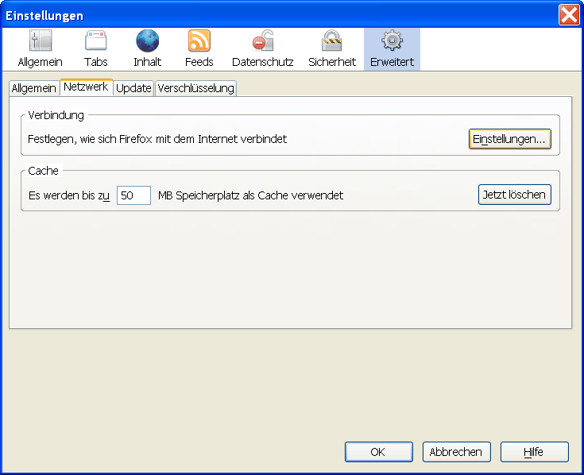

Alternative Browser Inhalt
Alternative Browser Inhalt  Browservorbereitung Alternative Browser Alternative Browser
Browservorbereitung Alternative Browser Alternative Browser Alternative Browser Inhalt
Browservorbereitung Alternative Browser Alternative Browser
JonDos empfiehlt den bereits fertig konfigurierten JonDoFox zum sicheren, anonymen Websurfen. Er ist als vollständiger Browser oder als Firefox-Profil für alle Betriebssysteme verfügbar.
Um JonDo in Mozilla-Firefox ohne JonDoFox einzurichten gehen Sie folgendermaßen vor :
Wählen Sie im Menü Extras (Windows), bzw. Firefox (Mac OS X) das Untermenü Einstellungen.... Danach öffnet sich das Einstellungsfenster. Wählen Sie in diesem den Punkt Erweitert und dort den Tab Netzwerk:
Um den Proxyserver einzustellen, klicken Sie auf die Schaltfläche Einstellungen.... In dem Fenster, das sich nun öffnet, wählen Sie Manuelle Proxy-Konfiguration aus. Wählen Sie Für alle Protokolle diesen Proxyserver verwenden und tragen sie nun 127.0.0.1 als Server und 4001 als Port ein:

Wollen Sie Adressen festlegen, für die JonDo nicht verwendet werden soll, so können Sie im Feld Kein Proxy für: Ausnahmen festlegen, jeweils durch ein normales Komma getrennt.
Hinweis:
Falls Sie im JonDo einen anderen Listenerport eingestellt haben, müssen
Sie hier diesen anstatt 4001 eintragen.
Alternative Browser Inhalt
Browservorbereitung Alternative Browser
Alternative Browser